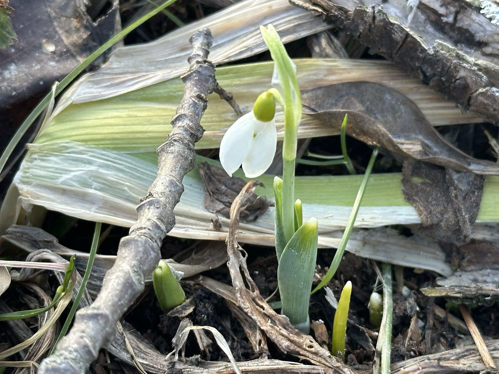
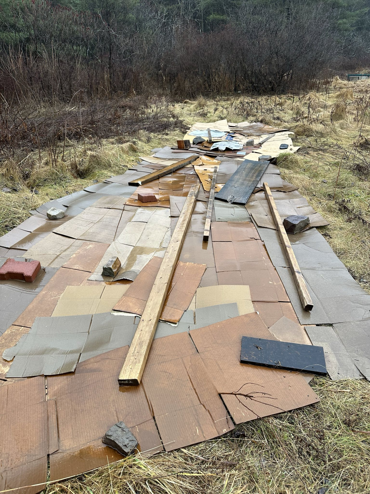
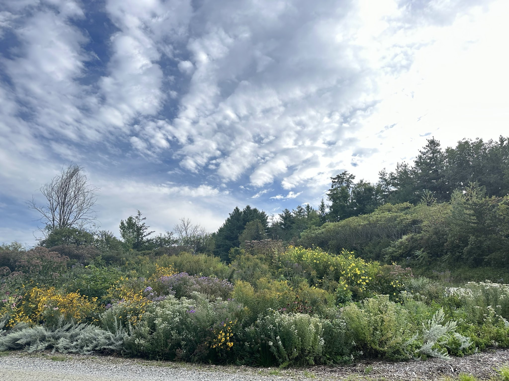

February 2024
Spring 2024: Don’t Panic

It’s been a short winter without much snow cover and warmer than average temperatures. While seeing snowdrops in February has been a pleasant surprise, I’m taken back by how quickly they emerged. What else is going on if the snowdrops are up so early? While I’m trying not to dwell on the climate change, specifically not to freak out, I am struck by the unpredictable nature of early and late blooms (e.g. lilacs and apple blooms this past fall) I am thinking of what practices we can engage in to help wildlife and ourselves in our home gardens and neighborhoods. In 2024, my goal is not to panic, roll with it (what else are we going to do?)
I heard a suggestion to plant earlier in the fall and put more of a focus on spring planting from Dr. Kim Eierman on the “Growing Greener” podcast. The thinking would be that we’d allow plants additional time to get established without the threat of fall and winter droughts. Important to note that the plants she refers to all happen to be native plants, whether this makes a huge difference or not I’m not sure. With this in mind, I’ve checked my literal seed stash. My perennial seeds include lupine, wild senna, and milkweed. I have also inventoried my annuals; zinnias, sunflowers, random flower mixes, veggies, and all of those germaniums and passion flowers in my basement. Another lovely nonnative I’ve checked on are my Dahlia and other exotic bulbs stored and tucked away for the winter (most all from South America.) Doing a quick inventory helps put advanced plant purchases in perspective, saving money, energy, and time.

As for new native perennials, this spring I’m adding 90+ 4 inch pots from River Berry Farm, 50 bare roots from Fedco, and 12 plants/bare roots from Prairie Moon Nursery. While ordering may have closed through Fedco, River Berry Farm in Fairfax, Vermont has a relatively large inventory and I’m excited to add these plants my home garden as I have done in years past. These plants and seeds will be added to a garden I’m lovingly calling the “Birds and Bears” garden. I’m creating this with a few dump truck loads of manure, cardboard, and many trees, shrubs, and perennials all collected for a habitat. This is a labor of love. Bare root plants need to be potted, potted plants need care when they are small, and soil needs to be prepped.
Why birds and bears? Birds, bears, and everything in between are in trouble. Bears frequently meet their food needs rifling through human trash, while birds are declining sharply in numbers as insect populations drop -- not to mention migratory birds have an often perilous journey to make to our northern climate. My home is a perfect environment for both of these beautiful animals. Protected forest next to river with access to berry bushes, pollinator gardens filled with insects, fruit trees, and fruit bearing shrubs, all available to wildlife without pressure from hunters, cars collisions, and trappers. The yard is wrapped in thick gardens surrounded by meadows and shrubs, an additional buffer from the outside world. There is always room for improvement, but Eden takes awhile to create.
In the neighborhood the gardens continue to grow, with smaller expansions and improvements.

With 8 gardens in Charlotte and one large school garden in Monkton, the small volunteer force that maintains these places has reached their maximum output. As these gardens age, perennials need dividing and sometimes replacing and invasive plants need to be removed. As it stands a variety of insects have been documented at each of these gardens, getting them closer to being iNaturalist projects. Two trees will be added to the Butterfly Garden at the Quinlan Bridge and zinnia seeds scattered in all locations. Other than a few additions to each garden, we are officially in maintenance mode!
I’ll be speaking online and a few garden locations this spring. Dates are coming out soon and I’m excited to post those. I’m cutting back a bit on garden consulting and installs this year, as I begin to focus my attention on being in my own neighborhood gardens and a possible revamp of a hidden apple orchard. Secrets, secrets are so much fun (especially when they involve hidden gardens and orchards.)
Filed in the garden journal · February 2024